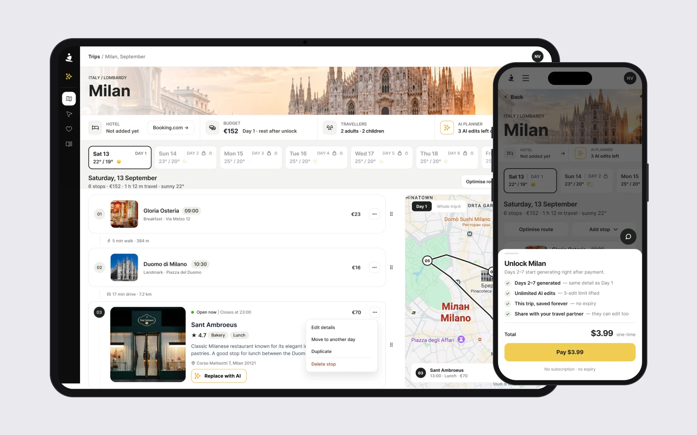
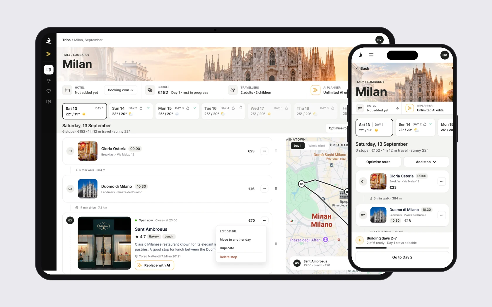
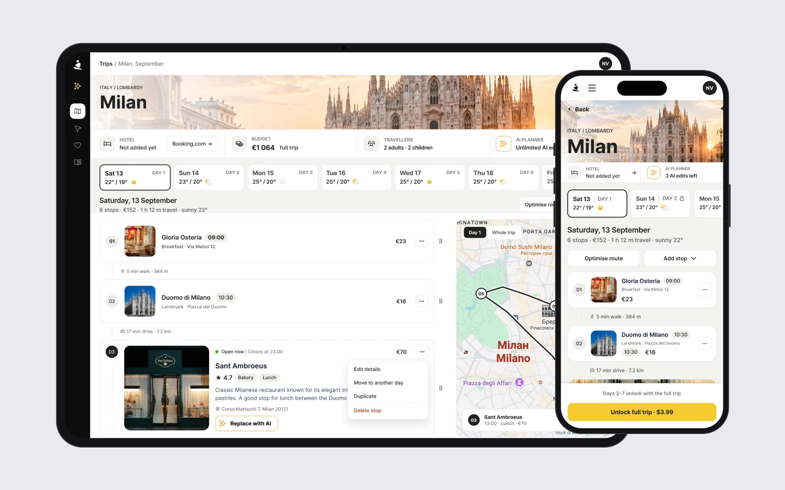
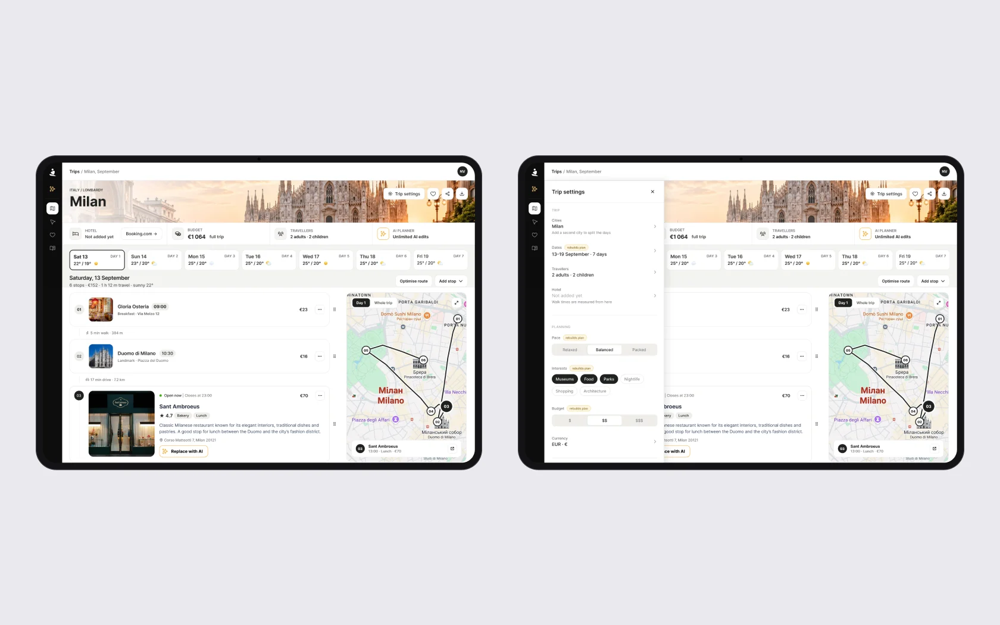
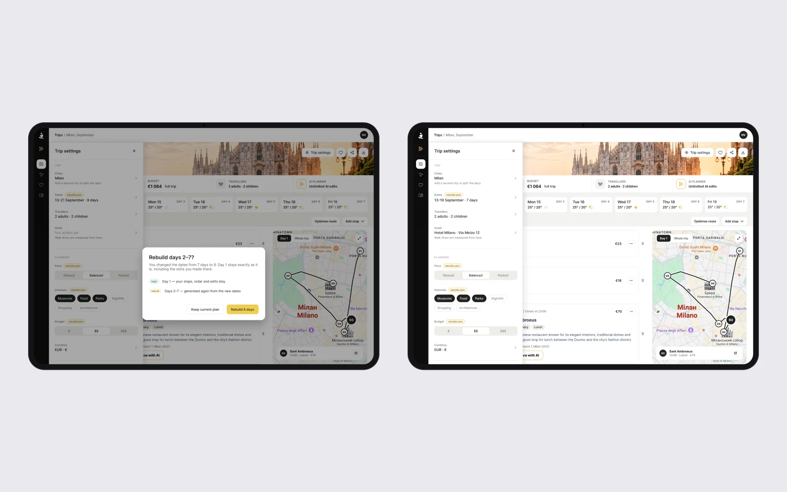
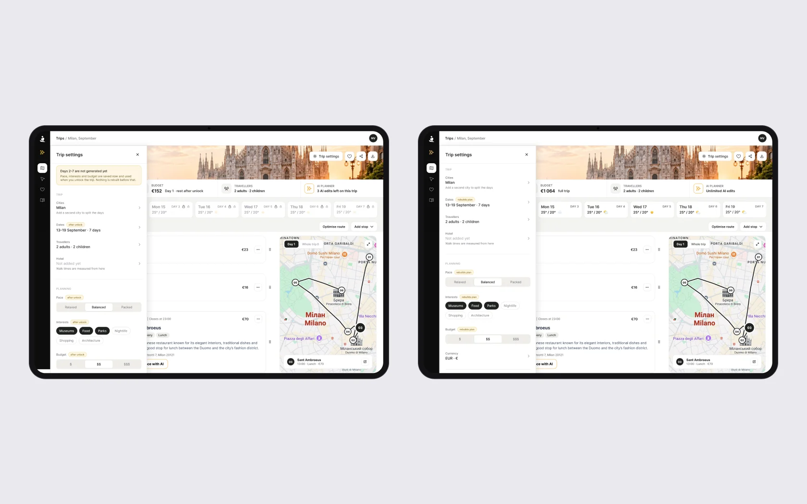

A travel planner that charges per trip: day 1 is free, days 2–7 open after unlock
The client asked for a redesign of the Plan Page – the main screen after a trip is generated: days, places, times, budget, hotels, the map and editing. We agreed not to start with UI: discovery first.
The development team set the main constraint. Days 2–7 are generated only after payment, to save tokens. So no fix may make the product generate more than it does now.
What the analytics, competitors and the audit showed
In Amplitude I went through 14 event types, 6 of them custom: purchases and the nine-step product tour on the generated plan. I compared Wanderlog and Mindtrip, plus Stippl, Roadtrippers and Tripadvisor Trips, ran an accessibility pass and a heuristic audit, and gathered everything into a problem map and a change plan – 11 sections in Notion.
On the call with the client we confirmed five issues:
- the Booking banner stays after a hotel is added;
- an added hotel shows up as an empty card in every day;
- on mobile the support button covers the payment window;
- collapsed days look like a bare list with no summary;
- Booking receives 2 guests instead of 4.
We agreed that this stage is UX fixes on the existing design. A redesign comes later, separately, and reuses the same elements.
Unlock shows what you get – and nothing extra is generated
- Why
- Before payment, days 2–7 don’t exist yet: they are generated only after unlock. The screen has to explain that without generating a preview.
- What I did
- Four states. Locked: day 1 is open, days 2–7 are marked as not generated yet. Payment. Generating: days arrive one by one, and day 1 stays editable. Unlocked: no locks, unlimited AI, a budget for the whole trip.
- Result
- People see what unlocking gives and what happens after paying, and the product generates exactly what it did before.
StatusMockups for desktop and mobile.



Trip settings you can find and edit
- Why
- After generation, trip settings couldn’t be edited anywhere – so there was no point looking for them.
- What I did
- A labelled button in the header, not an icon. A 400 px panel on the right over the map, so the plan stays visible and editable – it is the plan that changes when dates or the group change. Fields are split into those that apply at once and those that rebuild days.
- Result
- Settings are one click away, and it is clear which change rebuilds the plan.
StatusMockups.

Changing dates never regenerates silently
- Why
- New dates rebuild days 2–7, and token economy is a hard constraint – a silent regeneration can’t happen.
- What I did
- A confirmation dialog names what stays and what is rebuilt. When a hotel is added, the Booking banner disappears and walking times are recalculated from the hotel – a promise from their pricing page.
- Result
- People know what they will lose before they change dates, and the hotel banner no longer stays after the hotel is added.
StatusMockups.

Settings before unlock, and the right number of guests
- Why
- Before unlock, days 2–7 don’t exist, so settings for them can’t rebuild anything. And Booking received 2 guests instead of 4.
- What I did
- Pace, interests and budget are saved before unlock with an “after unlock” label instead of “rebuilds plan”. Sharing is included in the Single trip plan, and the group composition sits in the same panel – that is where Booking takes the number of guests from. The hotel is set by address with a link, because the product has no hotel inventory of its own.
- Result
- Settings work before unlock without generating anything, and Booking receives the real group size.
StatusMockups.

- 01
Token economy is a hard constraint of the project: no recommendation may make the product generate more than it does now.
- 02
This stage is UX fixes on the existing design. The redesign of the Plan Page comes separately and reuses the same elements, so these fixes carry over.
- 03
Next: a test with someone opening the product for the first time, and messages from the support bot as another source of pain points.